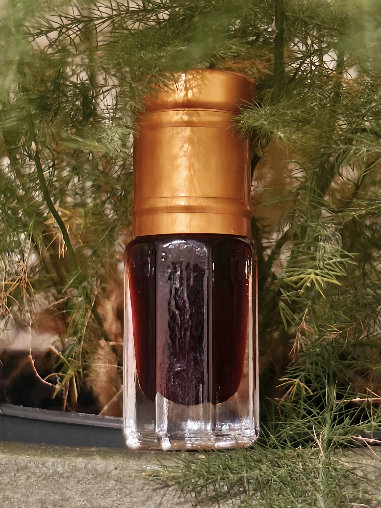

Oud Al Luqman
A 1 of 1 for Mufti Luqman
In Peckham, a small urban district of African, Asian, and Hispanic mix, there is a mosque.
A small gated building with a few floors to accommodate all the men and women who pray, tall ceilings for the eyes to gaze at, and a blue carpet to sit on.
Amongst the many scholars who pass through this unassuming building, is the main Imam of the mosque, Mufti Luqman who studied under the late Mufti Ebrahim Dessai RahimahuAllahu.
A short but brief sitdown with the imam came a flurry of hadiths, advice, and thoughts about life - one after the other, succinct and appropriate to the ever-changing topics.
During the conversations about life and perfume and the maddening expenses of the perfumery art - Mufti Luqman swiped a generous amount of Oud Al Hind, my assumption being a Dhen Al Oud.
When applied, the oud itself has a sweet suede facet, some noticeable barn, and a bit of a stewed fruit facet that is all too common with these sort of oud.
Being an avid enjoyer, Mufti Luqman owns some precious materials despite never blending them together; Oud Al Luqman is a simple blend with 62% weight being a mix of oud for its given purpose, frankincense to allow it to diffuse, and amber with saffron for added warming luxary.
Oud Al Luqman is just a single bottle, nothing more of it exists - it is intellectually archived and the only way to try it is by asking Mufti himself.